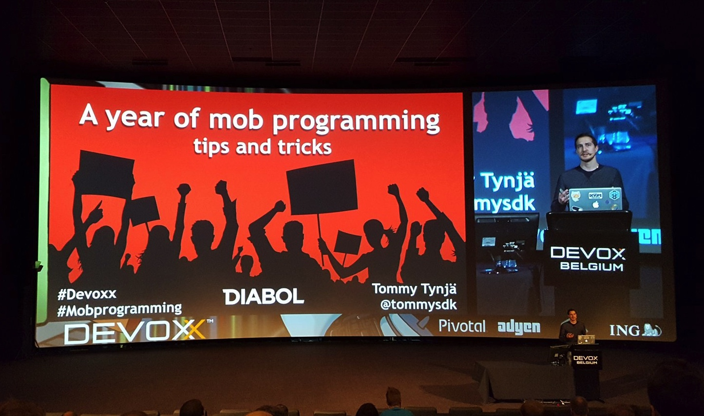

I'm a passionate software professional with 10+ years of industry experience. I have extensive experience of software development and streamlining software development processes using lean, agile, continuous delivery and DevOps ways of working. Specialized on developing quality software running on the Java platform. An advocate of open source software, test-driven development, automation and tools that boost developer productivity and get software shipped faster.
I speak regurlarly on renowned international software conferences. I've spoken at e.g. Devoxx Belgium, JavaOne Latin America and Jfokus. I've also held lectures on test-driven development, continuous delivery and container technology with Docker for software engineering students at the Royal Institute of Technology. Co-founder of the Continuous Delivery Stockholm user group with over 900 members.
Contributed to various open source projects during my spare time, such as Arquillian, ShrinkWrap and Apache TomEE. Currently a maintainer of the Jenkins Delivery Pipeline plugin. I'm always keen to try out new technologies and to constantly learn new things.
Currently working as an Engineering Manager at Spotify, focusing on the Spotify Lite app. Based in Stockholm, Sweden.